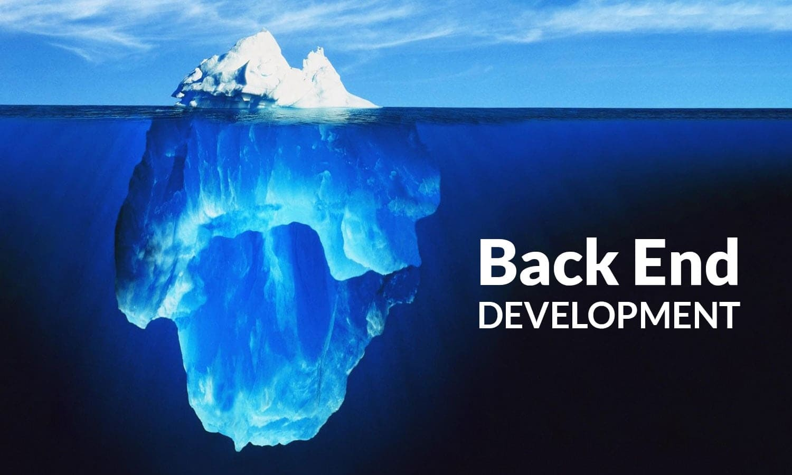
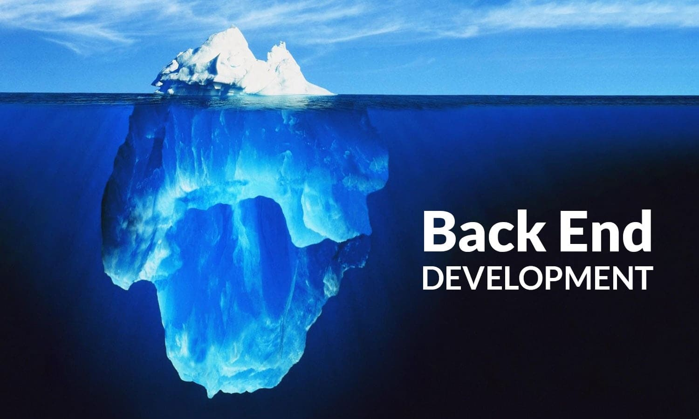

BACK-END DEVELOPMENT
I am multilingual. Low-level [C programming], high-level [Python, JavaScript, Bash].
Some technologies I am familiar with include Haproxy, Puppet, Nginx, Docker.
<huming-bird>

ICSS ENGINEER | SOFTWARE ENGINEER | BACK-END DEV | DATA SCIENTIST
I am multilingual. Low-level [C programming], high-level [Python, JavaScript, Bash].
Some technologies I am familiar with include Haproxy, Puppet, Nginx, Docker.
I am multilingual. Low-level [C programming], high-level [Python, JavaScript, Bash].
Some technologies I am familiar with include Haproxy, Puppet, Nginx, Docker.
I am multilingual. Low-level [C programming], high-level [Python, JavaScript, Bash].
Some technologies I am familiar with include Haproxy, Puppet, Nginx, Docker.

Heya,
you made it this far :), thank you for sticking with me. I am Ahmed (you probably know this by now lol)
I am a graduate of chemical engineering, a registered proessional process engineer with the council for the regulation
of engineering in nigeria (COREN). My flair for programming waas ignited in my second year in school when I took computer
programming [FORTRAN, C, C++, VBA] as a requisite for obtaining my bachelors. Though I was used to writing excel functions,
I got fascinated by what i could achieve with such knowledge. I registered for embedded systems programming late in my fourth year but didn't
show up for classes. I later started working as a process engineer in a chemical plant after which I decided to re-ignite that geek fire in me.
(I had always fiddle with computers during my school days). I took up professional training in Industrial automation where i learnt
how to make machines interact with each other. I applied for an associate degree in computer science, an MBA (which didn't later work out).
It was during the associate's program I got to start python and since then I found love pressing my keyboard.
Fastforward, I applied for Software Engineering training and there I re-learnt low level language, DevOps, FrontEnd and BackEnd engineering.
I also am a certified Data Scientist and analyst from DataCamp.
Yeah, this is just me trying to be serious hehehe. On the other hand I play and play and playyyyyyyyyyyy.
Tablel tennis, swimming, volleyball, Taekwondo [1st Dan], Video games and sooooooooo oooooonnnnnnnnn.


 
